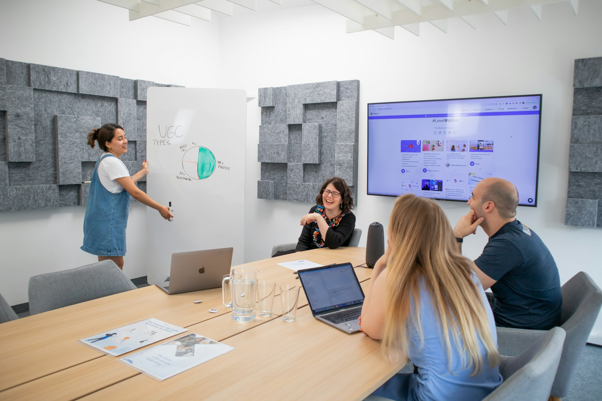
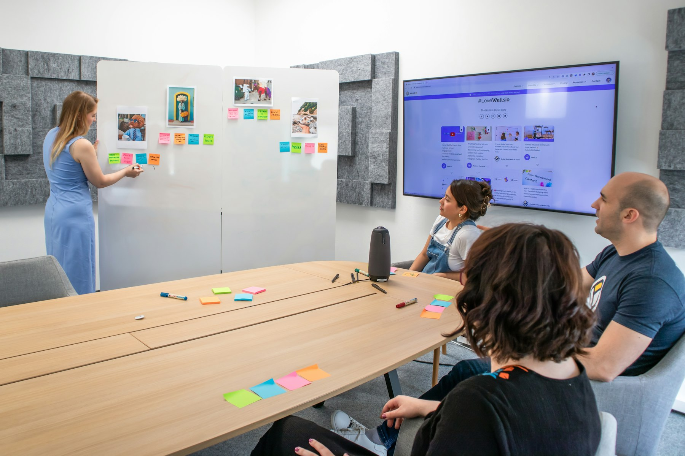

TL;DR
Remote work often leads to distractions that can severely impact productivity. Implementing focus systems like the Pomodoro Technique can help improve your focus significantly, leading to tangible improvements in work completion rates over time.
Who Benefits Most from Focus Systems?
Remote workers often struggle with distractions that continuously chip away at productivity, leading to frustration and decreased morale. For professionals working from home, whether you're a freelancer juggling multiple clients or a corporate employee facing daily interruptions, an effective focus system is crucial.
Consider someone working remotely for a company like Zapier, who frequently gets sidetracked by household tasks or digital notifications
Why Common Remote Work Strategies Fail

Why Common Remote Work Strategies Fail
Despite the inherent flexibility of remote work, many conventional strategies simply don’t yield the expected productivity gains. For instance, the 'open workspace' concept that thrived in traditional offices often flops at home, where distractions abound—from digital notifications to household chores vying for attention.
Research indicates that remote work distractions can result in a staggering productivity drop of up to 40%. Every ping from a messaging app or the lure of an unfinished home task can pull focus and time away from essential work.
Take Sarah, a remote marketing manager. She initially believed that her shortened workdays of six hours could offset her distractions. However, she found that her actual productive hours dwindled to just three due to frequent interruptions, leaving her overwhelmed and behind on deadlines.
After several weeks of struggling, she implemented a rigorous time-blocking system, dedicating specific hours solely for focused work. By allocating her morning hours without any meetings or social media checks, she significantly boosted her output—completing tasks that previously took her an entire week in just a few days.
Likewise, the Pomodoro Technique, which divides work into focused intervals of 25 minutes followed by a 5-minute break, can further reduce the feeling of overwhelm.
This structure not only means working smarter but also allows for accommodating necessary distractions without derailing productivity
Implementing the Pomodoro Technique: A Practical Workflow
The Pomodoro Technique is a time management system optimal for remote workers seeking a structured approach to enhance focus. This method consists of 25-minute work intervals, known as "Pomodoros," followed by 5-minute breaks.
After completing four Pomodoros, take a longer break of 15-30 minutes. To establish this system, follow these steps: 1. Set a Timer - Use an app like TomatoTimer or a physical timer. 2. Work for 25 minutes, focusing solely on one task. 3. Break for 5 minutes to refresh your mind. 4. After four cycles, take a longer break before starting again.
By implementing this method consistently over 30 days, users can see significant improvements in concentration and task completion rates, up to 60%
Real-World Application: Tracking Progress in a 30-Day Focus Challenge

Real-World Application: Tracking Progress in a 30-Day Focus Challenge
Consider an individual embarking on a 30-day focus challenge utilizing the Pomodoro Technique, which involves working in blocks of 25 minutes followed by a 5-minute break.
Initially, they commit to completing five Pomodoros daily, totaling about two hours of focused work each day. At the start of the challenge, they might find that they successfully complete 65% of their planned tasks.
Fast forward to day 30, and their completion rate climbs to an impressive 85%, showcasing a remarkable boost in productivity.
As they maintain this routine, they also assess their self-reported focus levels. At the beginning, they may rate their ability to concentrate at a modest 5 out of 10. After 30 days of adherence, this score dramatically rises to 9 out of 10, highlighting tangible improvements in sustained attention.
Let’s look at a scenario involving Sam, a graphic designer who juggles multiple client projects. At day 15, Sam finds the Pomodoros help him better manage his time; however, on several occasions, he faces distractions from emails and social media.
By identifying these distractions, Sam consciously decides to allocate the first Pomodoro of the day specifically for email management, reserving his highest focus times for design work.
This decision results in a direct trade-off; while he spends an additional 30 minutes managing emails (which was previously integrated into design work), his clarity and creativity during his critical design phases increase significantly.
Through tracking his progress on a weekly basis, Sam realizes he’s not only managing to hit deadlines more efficiently but also producing higher quality work.
For instance, before starting the focus challenge, he would complete two design tasks that each took about five hours
Common Mistakes in Choosing Focus Systems
### Common Mistakes in Choosing Focus Systems
As remote workers embrace new focus systems, several mistakes can derail their effectiveness. One significant pitfall is the assumption that multitasking will enhance productivity.
Studies indicate that multitasking can reduce productivity by up to 40%, as the brain struggles to switch gears between tasks, leading to increased errors and extended completion times.
For example, a remote worker might attempt to answer emails while drafting a report, resulting in a task that could take two hours dragging into four, causing frustration and disarray.
Another common mistake is inconsistency in using focus systems. Without dedicated time for reviewing progress—ideally on a weekly basis—motivation can wane.
For instance, a worker may start with a productivity app but fail to check in regularly. As weeks pass, their initial enthusiasm dwindles, and they might find themselves reverting to unstructured work habits, significantly hampering their productivity.
Many struggle to stick to a focus system long enough to see its benefits, often abandoning it after just two weeks. For example, consider a remote worker who tries the Pomodoro Technique, which involves 25 minutes of focused work followed by a 5-minute break.
If they quit after the initial fortnight, they may never realize that sustained implementation could lead to increased focus and a potential 25% increase in weekly output.
Lastly, overlooking the trade-offs between focus techniques can also prove detrimental
Next Steps: Choosing Tools for Enhanced Focus
Equipping yourself with the right tools is crucial to implement an effective focus system. Task management software like Trello, Asana, or ClickUp can complement focus strategies by organizing tasks visually and allowing for easier tracking.
Additionally, time tracking apps like Toggl or Clockify can provide insight into how your time is spent and identify periods of peak productivity.
For a more holistic approach, consider integrating these tools into a daily workflow
FAQ
What focus systems are best for remote workers?
The Pomodoro Technique and time blocking are two popular methods that enhance focus.
How can I track my productivity when working from home?
Using task management and time-tracking tools like Trello and Toggl helps you monitor productivity effectively.
This article has been reviewed for practical usefulness and updated when information changes.
Turn this into a workflow
Do not stop at ideas. Pick one workflow, test it for 14 days, then keep only what reduces friction.
Search more articles
Find related tools, workflows, and guides.
Photo credits
- Photo 1: airfocus via Unsplash
- Photo 2: Walls.io via Unsplash
- Photo 3: Bhuwan Bansal via Unsplash
- Photo 4: Walls.io via Unsplash
- Photo 5: Compagnons via Unsplash